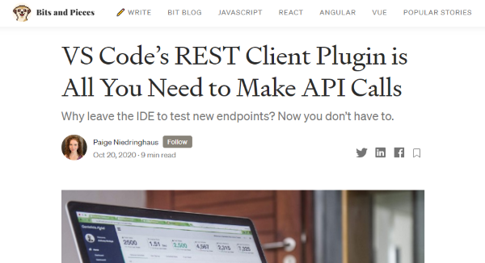
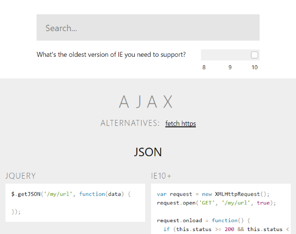
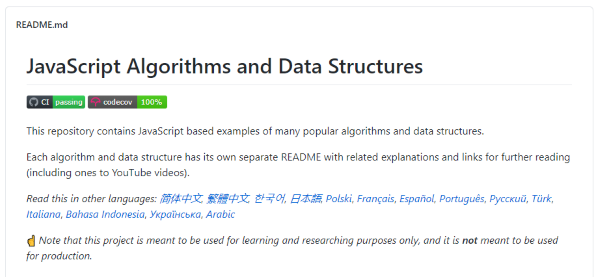

February and the first sunny days in 2021. What a delight! Have fun, sitting in the sun, discovering my newest finds on the web. This time, all regarding JavaScript…
- github1s: One second to read GitHub code with VS Code
- How to enhance fetch() with the Decorator Pattern
- Ky - Delightful HTTP Requests
- VS Code’s REST Client Plugin is All You Need to Make API Calls
- json-view
- You might not need jQuery
- JavaScript Algorithms and Data Structures
- date-fns - Modern JavaScript date utility library
- Parsing Markdown into an Automated Table of Contents
- FakeScroll - lightweight custom-looking scrollbars
github1s: One second to read GitHub code with VS Code
by netcon (conwnet)https://github.com/conwnet/github1s
How do you peak in the code of a Github repository? Navigate back and forth on github.com? The chinese developer netcon from Shenzhen has better idea: just add the 2 characters 1s to the github url and the repository opens up in the new version of VSCode, which now can be built for browsers. Pretty handy…
How to enhance fetch() with the Decorator Pattern
by Dmitri Pavlutinhttps://dmitripavlutin.com/enhance-fetch-with-decorator-pattern/
Fetching JSON files with JavaScript means to call fetch() asynchronously and pick the response manually. Two AWAITS and a lot of stuff can go wrong. Dmitri shows how to construct a class which enables you to do this in one step.
Ky - Delightful HTTP Requests
by Sindre Sorhushttps://github.com/sindresorhus/ky
Fetch is nice, but if you want it nice and easy, you have to rely on a 3rd-party library, like *Ky. Sindre Sorhus did a great job to bring fetching in one line, within around 13KB.
VS Code’s REST Client Plugin is All You Need to Make API Calls
by Paige Niedringhaushttps://blog.bitsrc.io/vs-codes-rest-client-plugin-is-all-you-need-to-make-api-calls-e9e95fcfd85a
Using Postman or Nightingale for testing your microservices? Not absolutely necessary, as there are possibilities to do it right in VSCode, as Paige show us in her post here. No need to leave your editor.
json-view
by Pavelhttps://github.com/pgrabovets/json-view
It’s not often that a developer has to display raw JSON data on a website or app. Pavel from the Ukraine has a solution to do this with style.
You might not need jQuery
by Zack Bloom and Adam Schwartzhttp://youmightnotneedjquery.com/
Many of us relied on jQuery in the past. So did Zack Bloom and Adam Schwartz as I suppose. They have published a website, that contrasts the native JavaScript methods for the most common jQuery methods. Go Vanilla, go!
JavaScript Algorithms and Data Structures
by Oleksii Trekhlebhttps://github.com/trekhleb/javascript-algorithms
Oleksii has collected a huge bunch of useful JS methods in his Github repository and has translated the docs for every method into 14 (!) languages. Whoop … what a job! Ever wanted to know how to calculate the Euclidean Distance? Oleksii has the answer and the code.
date-fns - Modern JavaScript date utility library
by {Many}https://date-fns.org/
moment.js, maybe the most used JS library for calculating dates, is now in maintenance mode, because it is getting on in years. A good alternative is date-fns, which supports tree-shaking and other modern approaches. In addition to that, you will find here and here good comparisons between several date libraries or even native JS.
Parsing Markdown into an Automated Table of Contents
by Lisi Linharthttps://css-tricks.com/parsing-markdown-into-an-automated-table-of-contents/
A well-structured text has headings, subheadings and paragraphs. For the web we often write our stuff in Markdown. Lisi shows us how to process such a Markdown file to get a TOC automatically.
FakeScroll - lightweight custom-looking scrollbars
by Yair Even Orhttps://github.com/yairEO/fakescroll
The scrollbar belongs to the website or app a developer is creating, in my opinion. Therefore it is a mess what browser manufacturers offer developers in terms of possibilities. Yair has constructed a JS library which replaces the build-in scrollbars completely with standard HTML elements. Nice…


Comments